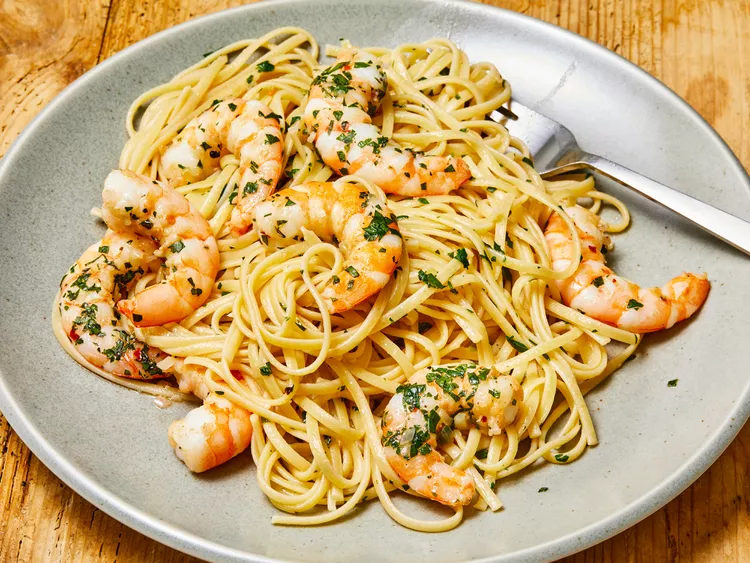

Shrimp Scampi with Pasta Recipe

So it appears that you want to know the best kept secret for a delicious dinner. Shrimp Scampi is a high protein dinner packed with
amazing flavor and usually linquine or spahghetti pasta.
Necessary Ingredients
- 1 (16 ounce) package linguine pasta
- 2 tablespoons butter
- 2 tablespoons extra-virgin olive oil
- 2 shallots, finely diced
- 2 cloves garlic, minced
- 1 pinch red pepper flakes (Optional)
- 1 pound shrimp, peeled and deveined
- 1 pinch kosher salt and freshly ground pepper
- ½ cup dry white wine
- 1 lemon, juiced
- 2 tablespoons butter
- 2 tablespoons extra-virgin olive oil
- 1⁄2 cup finely chopped fresh parsley leaves
- 1 teaspoon extra-virgin olive oil, or to taste
Instructions on how to make Shrimp Scampi
- Fire up a pot of water with a generous sprinkle of salt - make it dance with flavor!
- Toss in that linguine and let it boogie in the boiling water for 6 to 8 minutes until it's almost tender. Drain the water, bid it farewell.
- Melt 2 tablespoons of butter with 2 tablespoons of olive oil in a spacious skillet - let the butter and oil become best pals over medium heat.
- Introduce the shallots, garlic, and a hint of red pepper flakes to the sizzling party. Let them mingle until the shallots shimmer like disco lights - around 3 to 4 minutes.
- Now, it's showtime for the shrimp! Season them with a dash of kosher salt and a sprinkle of black pepper. Toss them into the spotlight, cook until they turn pink - about 2 to 3 minutes. Give them a round of applause, then let them bask in the warmth.
- Pour in the white wine and lemon juice, let the flavors waltz in the skillet. Use a wooden spoon to serenade the browned bits from the bottom of the pan.
- Melt another 2 tablespoons of butter in the mix, stir in 2 tablespoons of olive oil - let the rich concoction simmer and shimmy.
- Time for the grand finale! Toss the linguine, shrimp, and a shower of parsley into the buttery spectacle. Coat them in the glorious mixture, sprinkle with a pinch of salt and black pepper for that extra pizzazz. To finish, give it a drizzle of 1 teaspoon of olive oil - a star-studded performance awaits!
- Serve hot, and let the flavors dance on your taste buds! Enjoy the culinary extravaganza!
Return To Home Page